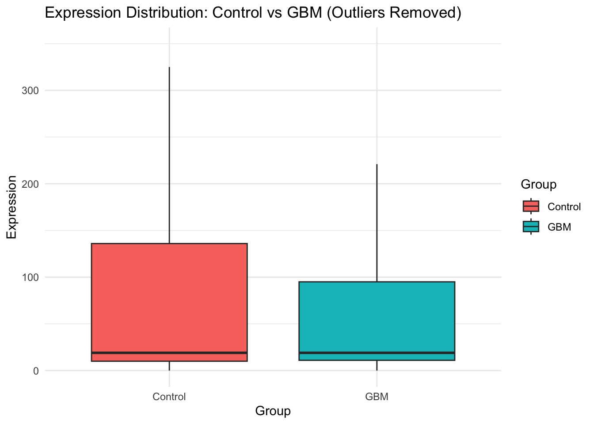

The following objects are masked from 'package:stats':
filter, lag
The following objects are masked from 'package:base':
intersect, setdiff, setequal, union
library(ggplot2)library(knitr)library(kableExtra)
Attaching package: 'kableExtra'
The following object is masked from 'package:dplyr':
group_rows
library(igraph)
Attaching package: 'igraph'
The following objects are masked from 'package:dplyr':
as_data_frame, groups, union
The following objects are masked from 'package:stats':
decompose, spectrum
The following object is masked from 'package:base':
union
library(ggraph)library(pheatmap)library(tidyr)
Attaching package: 'tidyr'
The following object is masked from 'package:igraph':
crossing
# Load the datadata <-read_excel("/Users/yuqinghu/Desktop/STA490/CollaborateProject/GSE156937.xlsx", sheet ="in")# Convert miRNA_ID to a factordata$miRNA_ID <-as.factor(data$miRNA_ID)
Warning: Returning more (or less) than 1 row per `summarise()` group was deprecated in
dplyr 1.1.0.
ℹ Please use `reframe()` instead.
ℹ When switching from `summarise()` to `reframe()`, remember that `reframe()`
always returns an ungrouped data frame and adjust accordingly.
# Add row names as a columnsummary_stats <-cbind(Statistic =rownames(summary_stats), summary_stats)rownames(summary_stats) <-NULL# Rename columns for claritycolnames(summary_stats) <-c("Statistic", colnames(data)[-1])# Display Summary Statistics as a Tableprint("Summary Statistics for Numerical Variables:")
[1] "Summary Statistics for Numerical Variables:"
summary_stats %>%kbl(caption ="Summary Statistics for Numerical Variables") %>%kable_styling(full_width =FALSE)
Summary Statistics for Numerical Variables
Statistic
Ctrl1
Ctrl2
Ctrl3
Ctrl4
GBM1
GBM2
GBM3
GBM4
GBM5
GBM6
GBM7
GBM8
GBM9
mean
931.0861
1060.550
1079.829
821.5614
769.1244
657.4434
1208.571
1398.136
986.8692
782.7337
960.3301
951.2249
1133.475
median
16.0000
20.000
20.000
19.0000
16.0000
20.0000
21.000
19.000
20.0000
18.0000
17.0000
19.0000
17.000
sd
7922.3853
7388.496
6798.288
5451.7693
6145.5172
4570.3958
9243.272
19286.050
8626.0398
5643.0384
6845.7946
5847.1270
8237.234
min
1.0000
2.000
0.000
2.0000
3.0000
1.0000
2.000
0.000
2.0000
3.0000
1.0000
2.0000
0.000
max
177267.0000
135184.000
96358.000
95868.0000
130396.0000
94916.0000
165684.000
474457.000
185424.0000
92773.0000
106511.0000
86023.0000
103717.000
# 2. Distribution of Control vs GBM Valuescontrol_columns <-grep("Ctrl", colnames(data), value =TRUE)gbm_columns <-grep("GBM", colnames(data), value =TRUE)data_distribution <- data %>%select(all_of(control_columns), all_of(gbm_columns)) %>% reshape2::melt() %>%mutate(Group =ifelse(grepl("Ctrl", variable), "Control", "GBM"))
No id variables; using all as measure variables
# Plot the distribution without outliers and limit y-axisprint("Distribution of Control vs GBM Values:")
[1] "Distribution of Control vs GBM Values:"
ggplot(data_distribution, aes(x = Group, y = value, fill = Group)) +geom_boxplot(outlier.shape =NA) +theme_minimal() +labs(title ="Expression Distribution: Control vs GBM (Outliers Removed)", x ="Group", y ="Expression") +coord_cartesian(ylim =c(0, 350)) +stat_summary(fun = mean, geom ="point", shape =20, size =3, color ="red", fill ="red")

# 3. Correlation Analysis between Numerical Variablescorrelation_matrix <- data %>%select(-miRNA_ID) %>%cor()# Print Correlation Matrixprint("Correlation Matrix:")
Warning: Setting row names on a tibble is deprecated.
# Validate row names: Remove rows with missing or duplicate row namesdata <- data %>%filter(!is.na(rownames(data))) # Ensure no missing row namesrownames(data) <-make.unique(rownames(data)) # Ensure uniqueness
Warning: Setting row names on a tibble is deprecated.
# Ensure all data is numericdata <- data %>%mutate(across(everything(), as.numeric))# Validate data: Remove rows with missing valuesdata <-na.omit(data)# Transpose the data for correlation across miRNAsdata_t <-as.data.frame(t(data))
# Compute correlation matrix for miRNAs (rows)miRNA_correlation_matrix <-cor(data_t, use ="pairwise.complete.obs")# Convert correlation matrix to a tidy formatcorrelation_data <-as.data.frame(as.table(miRNA_correlation_matrix)) %>%filter(Var1 != Var2) # Exclude self-correlations# Find the top 20 strongest correlations (positive and negative) by absolute valuestrongest_correlations <- correlation_data %>%mutate(abs_value =abs(Freq)) %>%arrange(desc(abs_value)) %>%slice(1:25) %>%arrange(desc(Freq)) # Retain original correlation values and prioritize positive/negative separately# Extract unique variables involved in top correlationsunique_vars <-unique(c(strongest_correlations$Var1, strongest_correlations$Var2))# Prepare the subset correlation matrixheatmap_matrix <- miRNA_correlation_matrix[unique_vars, unique_vars]# Create the heatmappheatmap( heatmap_matrix,cluster_rows =TRUE,cluster_cols =TRUE,display_numbers =TRUE,main ="Top 20 Strongest miRNA Correlations",color =colorRampPalette(c("orange", "white", "red"))(50))